인터넷과 웹
인터넷이 도시라면 웹은 도시 위에 있는 건물 하나입니다.
인터넷이 운영체제라면 웹은 운영체제 위에서 동작하는 하나의 앱이라고 할 수 있습니다.
웹의 창시자가 될 팀 버너스 리입니다
1990년 11월에 세계 최초의 웹브라우저를 만듭니다. 이 웹브라우저의 이름이 바로 월드 와이드 웹(world wide web)이었습니다.
수학은 이해하는 것이 아니라 익숙해지는 것입니다.
github(https://github.com)의 pages
저장소(repository)라는 것을 생성해 주셔야 합니다.
1)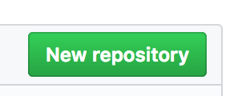
2)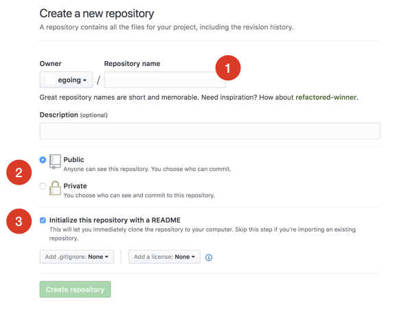
3)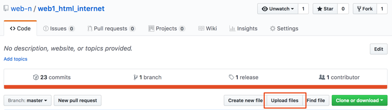
4)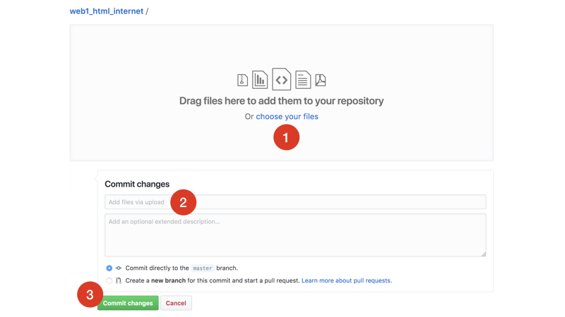
5)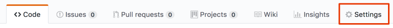
6)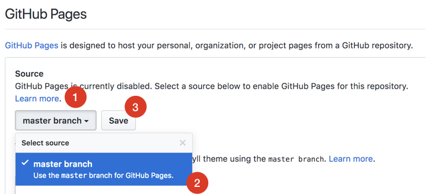
내 컴퓨터에 웹서버를 설치해서 누구나 내 컴퓨터에 있는 웹페이지를 볼 수 있도록 해 보겠습니다.
아파치를 운영체제별로 설치해야 합니다.
Bitnami WAMP Stack이라는 프로그램을 다운로드받을 수 있는 페이지 :
https://bitnami.com/stack/wamp1)
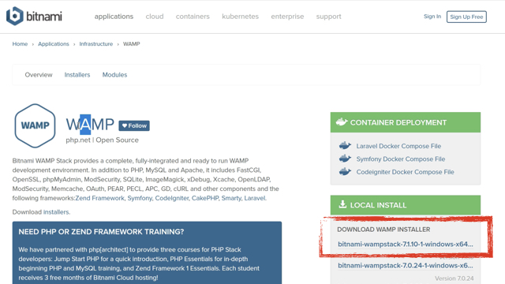
W는 Windows, A는 Apache, M은 MySQL, P는 PHP의 약자입니다. 우리는 이 중에서 Apache 웹서버를 설치하기 위해서 Bitnami를 깔고 있는 겁니다.
2)
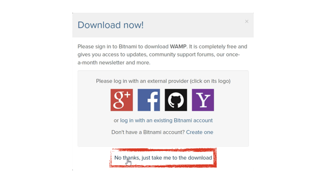
3)
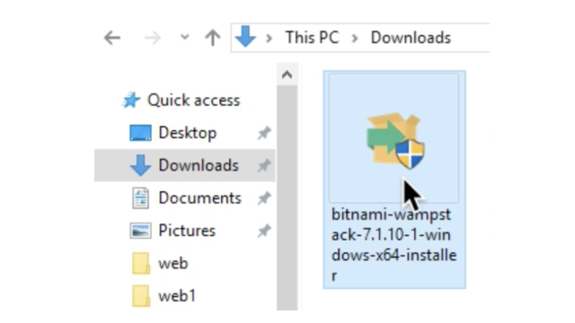
4) 내컴퓨터에 저장되는 위치 확인 할 것
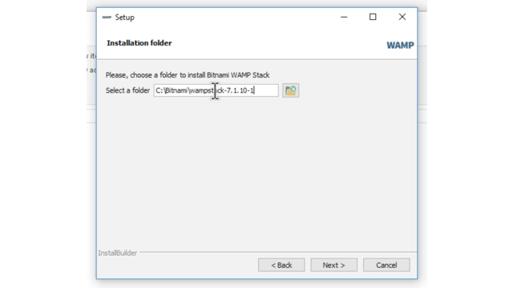
5) 비밀번호 다른수업에서 필요
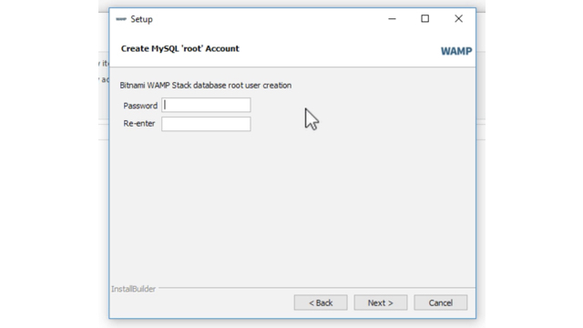
6)
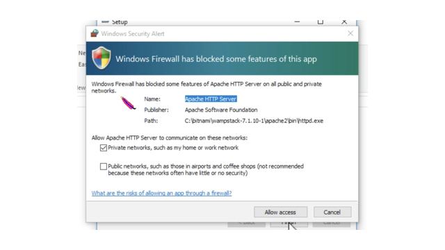
7)
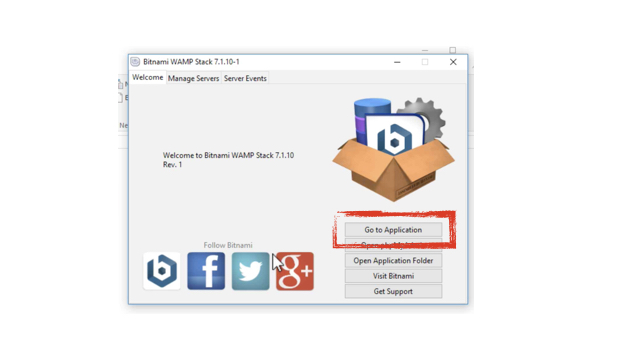
8)
매니저가 자동으로 실행되지 않거나, 나중에 실행하고 싶을 때는 윈도우 탐색기에서 Bitnami를 설치한 디렉토리를 찾으세요. 보통 C:\Bitnami\wampstack-** 라고 된 디렉토리 아래에 있습니다. 거기에서 manager-windows라고 되어 있는 프로그램을 실행하시면 됩니다.
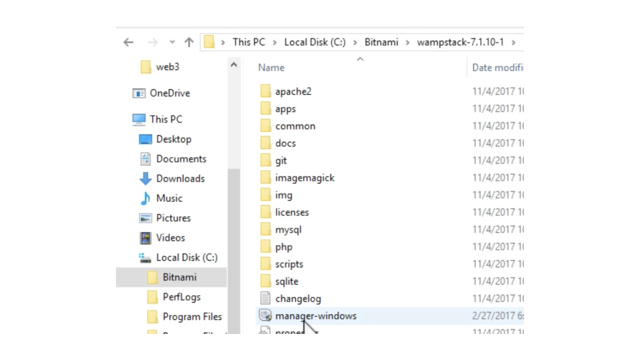
9)
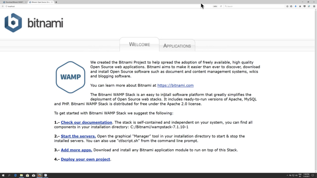
10)
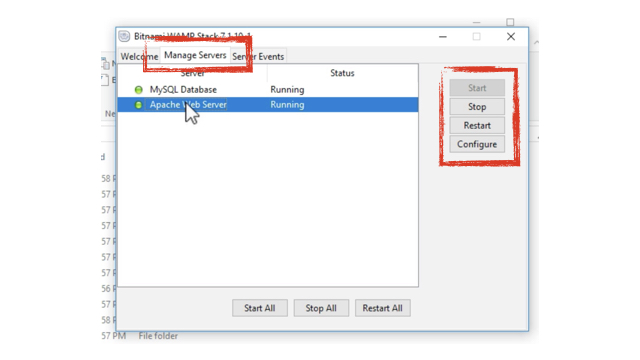
도메인 네임(domain name) : http://localhost/index.html
IP주소(Internet Protocol Address) : http://127.0.0.1/index.html
htdocs 디렉토리는 hypertext documents 의 약자이다
HTTP (Hyper Text Transfer Protocol) : http://는 HyperText Transfer Protocol의 약자. 즉 웹페이지를 전송하기 위해서 만든 통신 규약이라는 뜻
file://로 시작하면 웹브라우저는 파일을 직접 열어서 보여줍니다.
내컴퓨터 사양찾기 : dxdiag
내컴퓨터 IP주소 찾기 : ① '네트워크와 공유센터'에서 연결(Connections)항목을 클릭합니다. ② 자세히(Details) 버튼을 누릅니다.
[실행]을 클릭하고 cmd라고 치면 도스창이 뜹니다 거기에서 ipconfig이라고 치시면 자세한 IP주소가 나옵니다